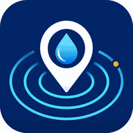

Sin conexión
Puedes revisar la última información guardada al volver a la página principal. Los reportes nuevos necesitan conexión para compartirse con la comunidad.

Puedes revisar la última información guardada al volver a la página principal. Los reportes nuevos necesitan conexión para compartirse con la comunidad.